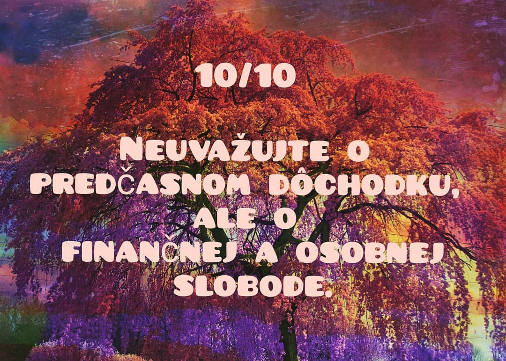

Základné pravidlá podľa @financie.v.malicku — Normy Jedál
Vašim cieľom nie je dosiahnuť bod, kedy odídete z práce a už nikdy nič robiť nebudete. Ide o to dosiahnuť bod, kedy už nebudete musieť robiť čokoľvek LEN pre peniaze.
Peniaze sú len jeden z nástrojov, ako dosiahnuť osobnú slobodu. Ak máte zmysluplnú prácu, ktorá vás napĺňa a umožňuje vám samoriadiť si na čom budete pracovať, ak máte vo svojom okolí dobrých priateľov a rodinu, potom ste dosiahli osobnú slobodu.
.
,,Peniaze nie sú cieľ, osobná sloboda je."
.
.
.
.
#financniodbornici #financnagramotnost #zakladnepravidla #dôchodok #oslobodenie #finančnasloboda #osobnasloboda